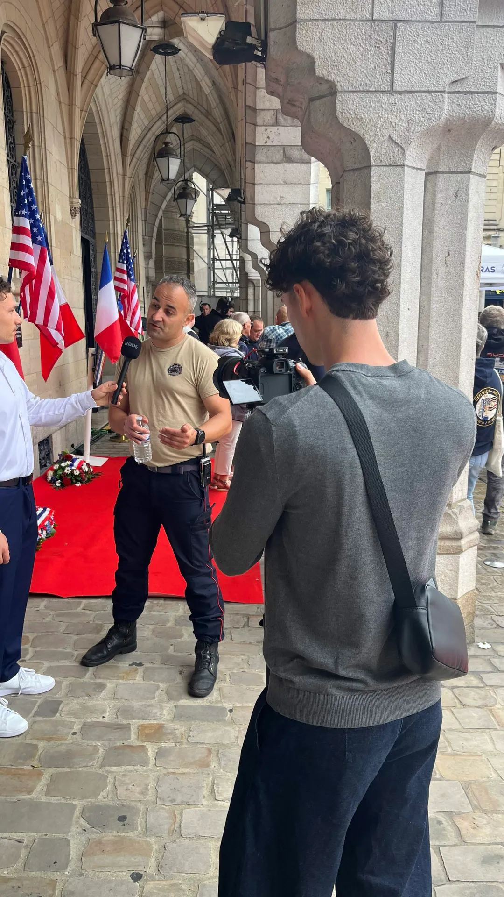

Captation vidéo
Sport, automobile, mariage, événements : je filme dans tous les domaines.
Bonjour, je suis
Photographe & vidéaste · près de Lens
Je suis étudiant en 3e année de BUT MMI (Métiers du Multimédia et de l’Internet) à Lens. Je fais de la photo et de la vidéo, surtout du sport en salle, des événements et des animaux. Je filme ou je photographie, puis je m’occupe moi-même du montage, de l’étalonnage et des visuels.
 DaVinci Resolve
DaVinci Resolve Premiere Pro
Premiere Pro After Effects
After Effects Lightroom
Lightroom Photoshop
Photoshop Illustrator
IllustratorBasé près de Lens, je me déplace dans le Pas-de-Calais, le Nord, la Somme et plus loin selon les projets.

Ce que je fais
Sport, automobile, mariage, événements : je filme dans tous les domaines.
Soirées, salons, cérémonies ou matchs : je capte l’ambiance et je la monte en aftermovie.
Du découpage technique au tournage, jusqu’au montage et à l’étalonnage.
Sport, animaux, automobile, mariage et shootings photo, avec retouche.
Ma façon de travailler
On commence par parler de votre projet : ce que vous voulez montrer, l’ambiance recherchée et l’endroit où les images seront diffusées. Je m’occupe ensuite du tournage ou de la prise de vue, puis du montage, de l’étalonnage et de la retouche.
Club, association, événement ou marque : j’adapte le format à votre besoin, d’une vidéo courte pour les réseaux à une captation complète ou une série de photos.
Un match, un événement, un projet de marque ? Parlez-moi de votre projet.